Jahe Kering
Aroma hangat yang akrab dalam minuman tradisional.
Mengenal kembali rempah dan tanaman herbal kering pilihan asli Tasikmalaya dengan cara yang praktis, sederhana, dan dekat dengan keseharian kita.

Sembilan bahan alami yang direncanakan hadir dalam bentuk kering. Informasi ukuran, harga, dan ketersediaan tersedia di marketplace yang tertera di menu kontak.
Aroma hangat yang akrab dalam minuman tradisional.

Rempah berwarna keemasan dengan karakter khas.
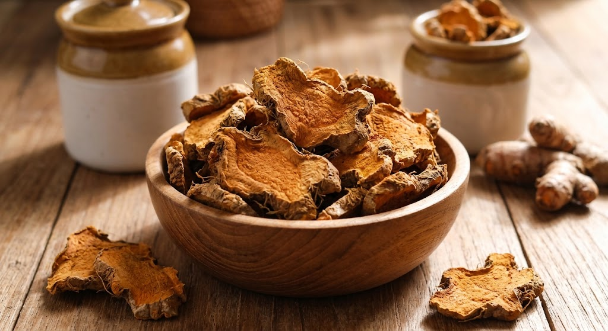
Bagian dari tradisi pemanfaatan rimpang Nusantara.
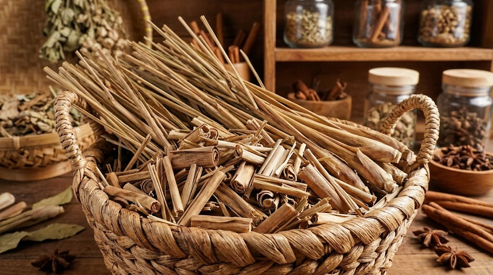
Memiliki aroma segar yang khas untuk seduhan dan masakan.
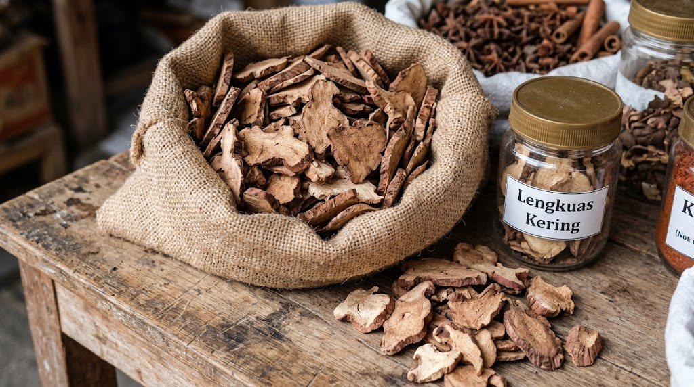
Rempah aromatik yang banyak dikenal dalam kuliner.
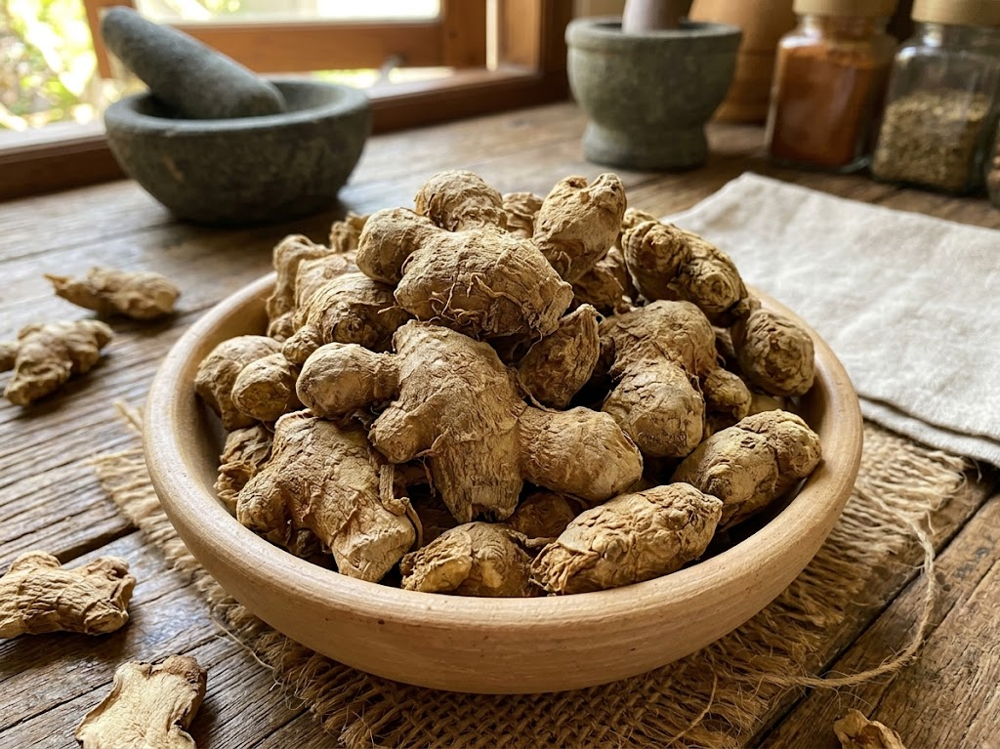
Rimpang dengan aroma khas dalam racikan tradisional.
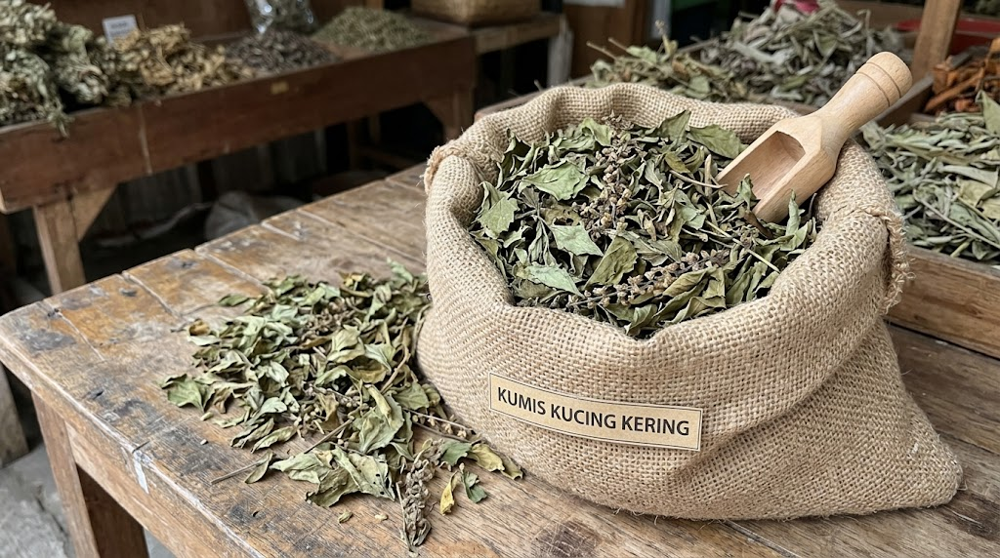
Daun herbal yang dikenal dalam penggunaan tradisional.
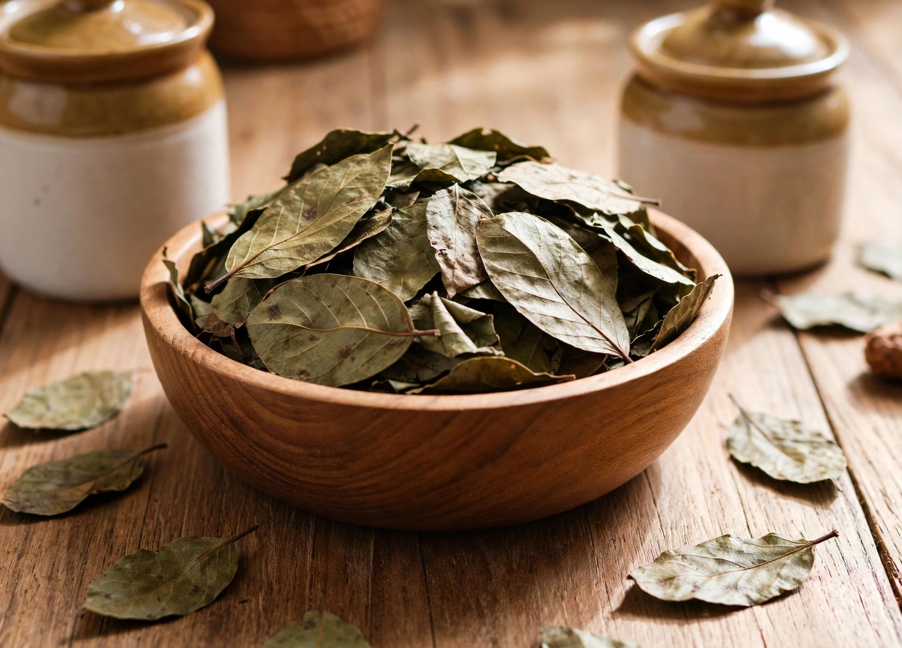
Tanaman dengan karakter botani yang khas.
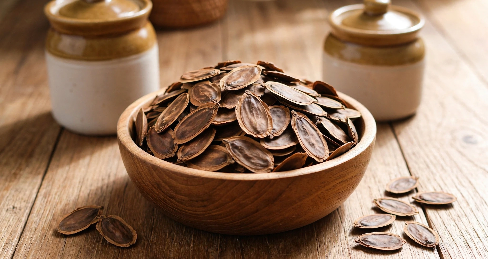
Bahan botani yang perlu informasi penggunaan secara cermat.
* Gambar yang ditampilkan merupakan ilustrasi yang menggambarkan foto produk asli. Ketersediaan produk bisa dilihat di marketplace.
Rempah Kampung Kuring berangkat dari gagasan sederhana: mendekatkan kembali rempah dan tanaman herbal kering ke kehidupan sehari-hari melalui informasi yang mudah dipahami dan penyajian yang praktis.
Kami sedang mengembalikan identitas masyarakat desa tradisional dengan menggunakan pilihan bahan, dan proses yang tepat. Setiap langkah akan disampaikan secara terbuka seiring Rempah Kampung Kuring tumbuh.
Setiap tanaman memiliki karakteristik dan sejarah penggunaan yang berbeda. Pilih bahan untuk membaca pengenalan singkatnya.
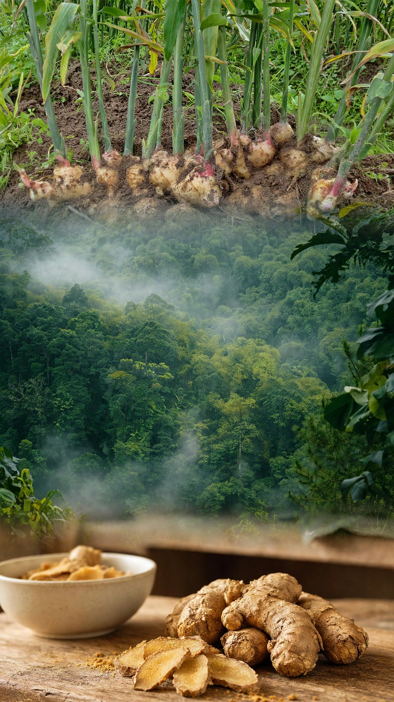
Rimpang dengan aroma hangat dan rasa pedas khas. Jahe digunakan luas sebagai bumbu dan dalam minuman tradisional.
Dapat dijumpai dalam berbagai olahan makanan dan minuman. Cara penggunaan perlu disesuaikan dengan jenis produk dan petunjuk yang tervalidasi.
Bagian ini akan menjelaskan proses yang benar-benar diterapkan. Tahapan berikut adalah gambaran umum dan perlu disesuaikan dengan praktik produksi aktual.
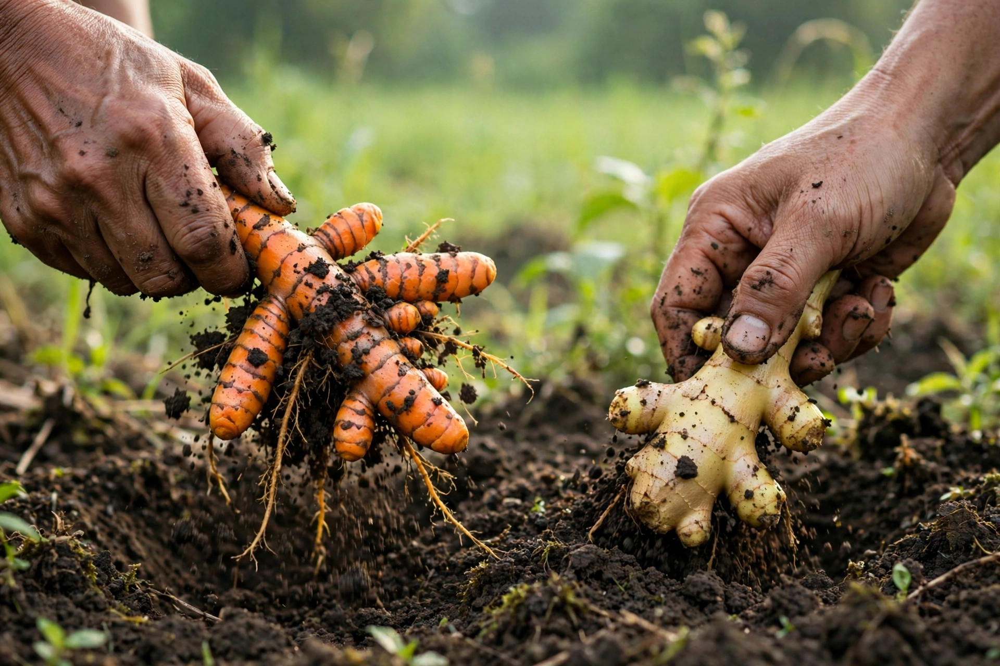
LANGKAH 01Pemilihan bahan, pemeriksaan kondisi, dan pembersihan sesuai karakter setiap tanaman.
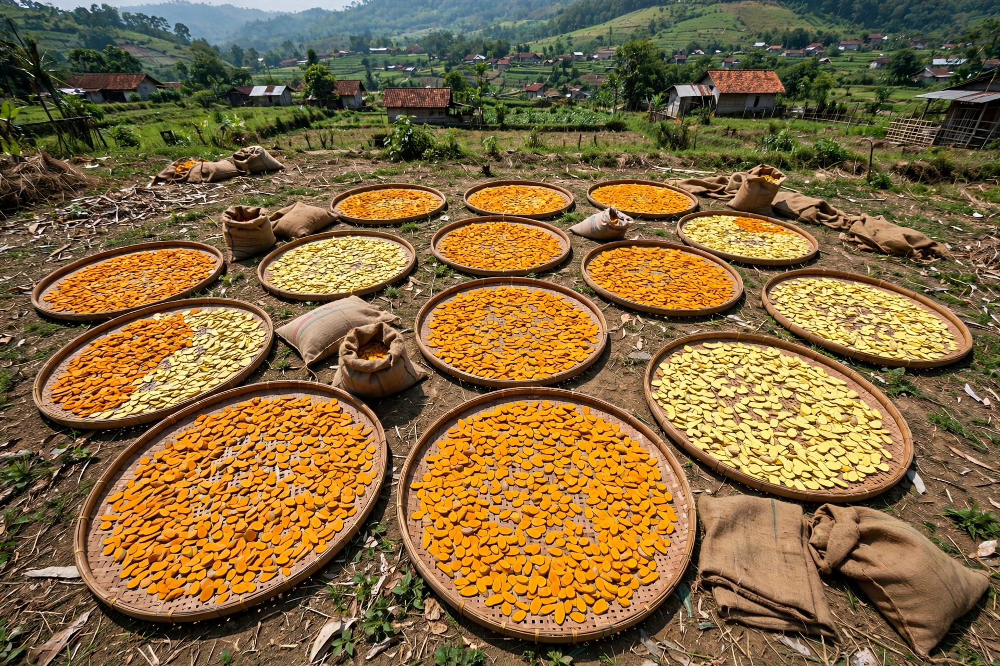
LANGKAH 02Metode dan kondisi pengeringan akan dicantumkan setelah proses produksi ditetapkan dan diverifikasi.
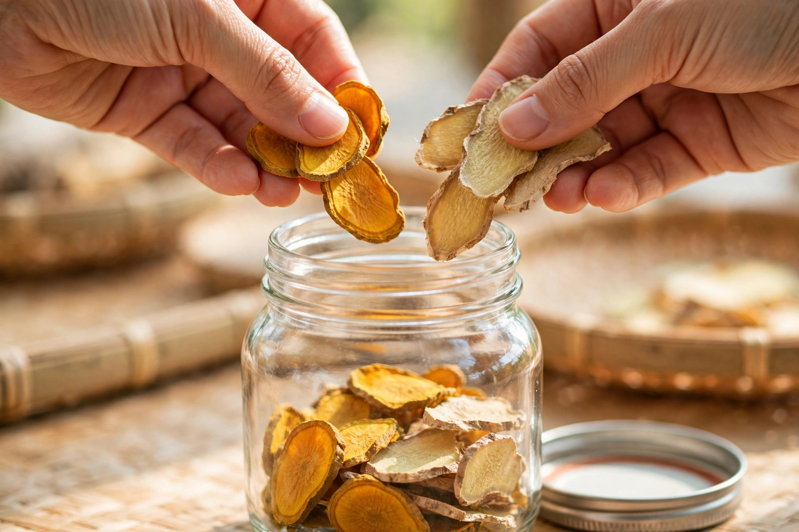
LANGKAH 03Pemilihan kemasan dan informasi label akan disesuaikan dengan kebutuhan keamanan dan mutu produk.
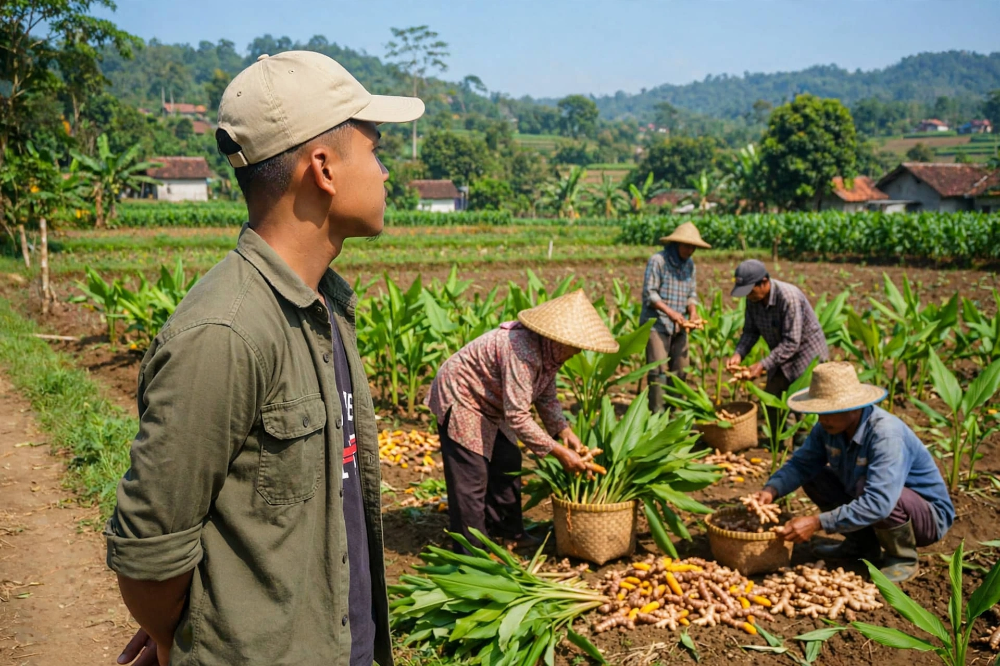
Rempah Kampung Kuring masih dalam tahap ide dan pengembangan. Kami sedang menyiapkan informasi produk dan proses agar bisa dibagikan dengan lebih baik.
Ikuti Perkembangannya ↗Kanal komunikasi resmi akan ditambahkan setelah tersedia. Nantikan informasi terbaru dari Rempah Kampung Kuring.
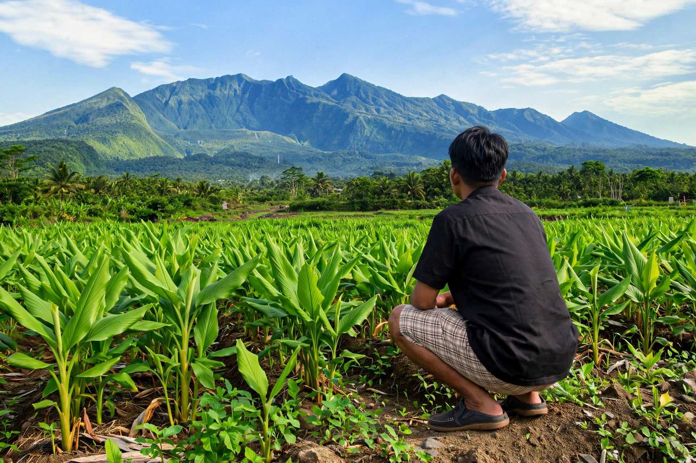